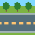

About this map
About this map
This interactive map shows what streets look like at eye level in Gdańsk — and where more greenery could be added in the future.
It is based on street-view images analysed using AI image segmentation.
 How to explore
How to explore
- Zoom out → compare districts
- Zoom in → explore individual streets
 Switch indices → greenery, imperviousness, open space
Switch indices → greenery, imperviousness, open space Highlight poor streets → explore tree planting scenarios
Highlight poor streets → explore tree planting scenarios
📊 Street-level indices

Green View Index (GVI)
How green does a street look to a pedestrian?
- High → lots of visible trees and vegetation
- Low → little visible greenery
How built-up does the street appear?
- High → roads, pavements, buildings dominate
- Low → more permeable surroundings
Open Space Index (OSI)
How much open, non-built space is visible?
- High → open ground or terrain
- Low → compact urban form
Tree planting potential
Where could more trees be planted?
Some streets have very low visible greenery.
For these streets, the map estimates:
- how many trees already exist
- how many could realistically be added
Explore three spacing scenarios:
- 🌱 Dense (5 m spacing)
- 🌱 Moderate (10 m spacing)
- 🌱 Conservative (15 m spacing)
District vs street view
District view → colors show average street conditions per district
Street view → colors show individual street segments
Street view → colors show individual street segments
District values are length-weighted:
▬ ▬ ▬ longer streets influence district color more.
👉 Zoom in to see street-level detail.